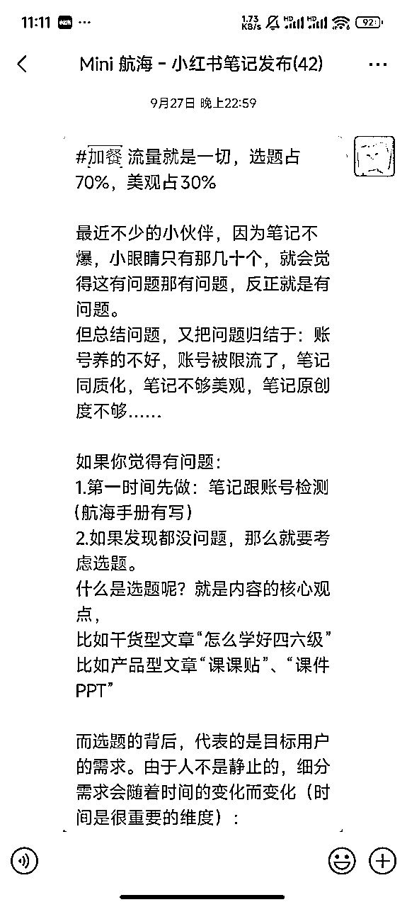
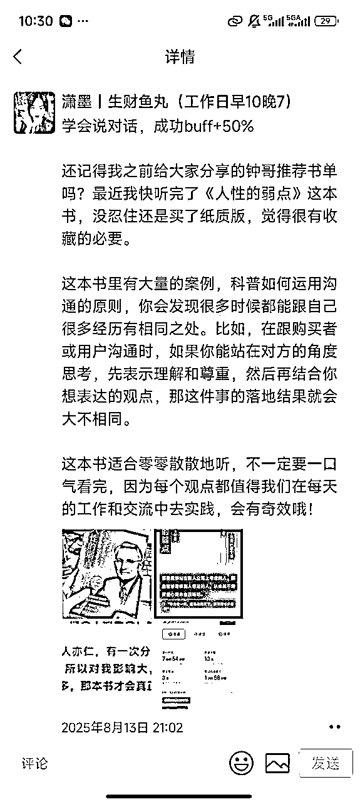
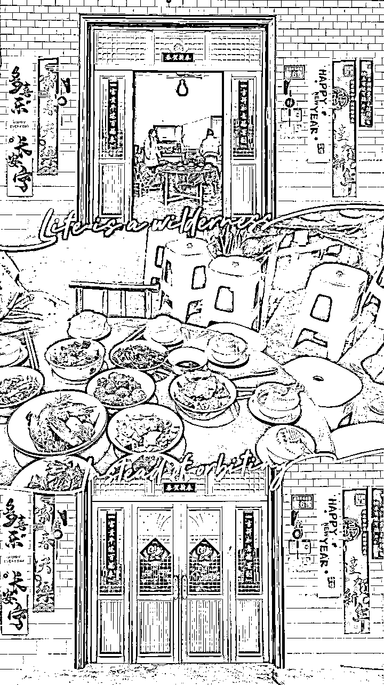
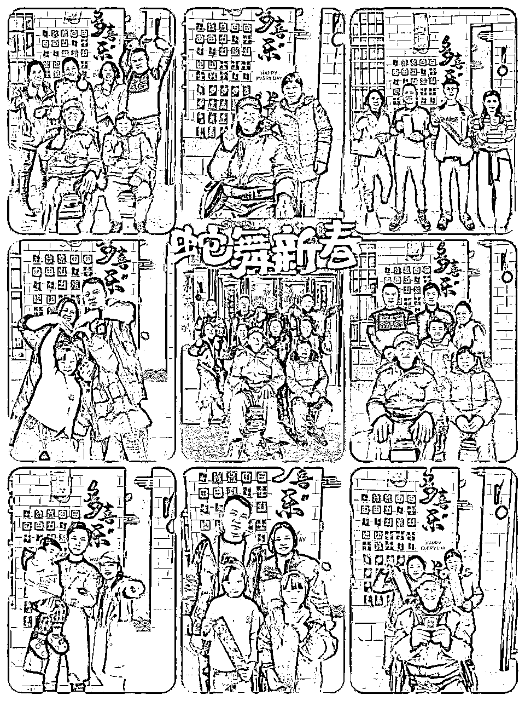
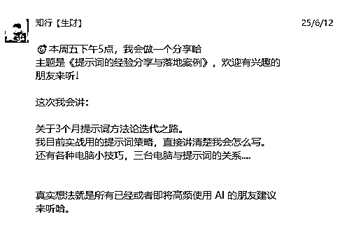

来源：https://shengcaiyoushu01.feishu.cn/docx/ERfEd5CzIosRxaxXIqZcMxKbnOI
最近在小灯塔里，看到了很多圈友分享自己的故事。
翻着翻着，我心里忽然有种触动，这些片段那么真实，也让我想起了自己的这几年。
于是我决定，把我的故事也写下来。
很高兴认识你，我叫潇墨，你可能不认识我，也可能认识我，简单的介绍一下自己的背景：
你肯定会很好奇，
我是如何1年内顺利转岗，又跑通副业成为教练，又搭建团队，为啥还破天荒的解散，又去做IP？
放心，我都会在接下来的故事里一点点分享出来，但是我想分享的不是某个 “成功案例”
而是一个普通女孩，如何在一次次选择、坚持、试错里，逐渐走向想要生活的故事。
因为没有曾经的这些努力，就没有现在的潇墨。
我的故事远没有你们想象的那么惊艳，也不是为了证明自己有多厉害，而是想通过我的故事告诉大家：
赚钱从来不是谁的人生答案，能够用所见所得所学，让生活更美好才是每个人的人生答案。
我不是什么热血青年，我大学毕业的时候从小县城跑到大城市来打拼只是因为我的不甘。
我出生在一个并不贫穷，却充满束缚感的家庭。
父亲脾气暴躁，大男子主义严重，母亲常常默默抹泪，我家虽然是双女家庭，但隐形的重男轻女。
最让我窒息的，是初三毕业那年父亲对我说的话：“为了延续族谱，以后你要招婿入赘，把孩子的姓氏延续下去。”
那一刻，我已经预判到了以后自己的人生要被 “传统” 二字束缚。
从婚姻到孩子的姓氏，全都不是我能决定的。
毛还没长齐，就要被迫接受既定命运，这种无力感让我每天都在想：一定要逃出去。
当然也肯定离不开一些间接因素，
比如说城市的工资水平，行业情况。
家乡浏阳，一线消费水平、十八线工资水平，平面设计干 3 年累死累活 4-5000 算高了。
省会长沙，一线消费水平，三四线工资水平，平面设计干 3 年累死累活顶天 6-7000 算不错了。
所以我想清楚了，要脱离原生家庭的控制，要独立，要赚钱，要成长，要自由。
然后我选择了去杭州，第一是因为杭州有熟人，第二是杭州有补贴，第三是杭州当时电商设计有搞头
以上都是我的理想画面
然后残酷的现实告诉我，成长都是要付出代价的。
其实当时杭州的电商设计早已经是“末班车”
当时我投了上百份简历，刚开始还自信满满，开口就要6-8k，结果屡屡碰壁。
最后，只进了一家阿里外包公司。底薪4000，上下班通勤要 4 个小时。
但是在阿里外包工作的时候，真的感受到了大城市和小城市的差距，哪怕是外包但是也做得是大厂的设计项目。
刚上班没多久医保还没交上，我因为爱心泛滥还喂流浪猫被抓伤，打了五针狂犬疫苗，花掉 800 块。
对别人可能不算什么，但对当时月薪 4000 还要交房租的我来说，几乎是半个月工资。为本不富裕的家庭雪上加霜.
刚来时，带我的同事是个脾气火爆的女生，每次请教都被她凶得不敢说话。
公司很多人觉得我撑不过一周，但我硬是熬了下来，把她熬走了。
后来听到别人说：“没想到你能坚持这么久”，那时候真的很爽，我做对了一件事就是：坚持。
那时候经常因为一个设计稿来回修改，加班到凌晨两三点是常事。
最苦的不是工作本身，而是每天通勤 4 小时，加班凌晨没有地铁再自己掏钱打车回家，没有加班工资，也没有报销。
父母并不知道我过得有多苦，我只报喜不报忧，因为我不想听到那句：“早就告诉过你，撑不住的。”
我想证明给他们看：哪怕很难，我也要坚持，只要我想，我肯定能站住脚。
所以说，我来杭州，是因为我当下的认知告诉我：在更大的城市，才有机会真正改变命运。
当时除了打工以外，副业就是画画接稿，大学一直到毕业设计 2 年一直都是通过技术活去赚点零花钱。
除靠技术以外，我是一定想不到还有生财有术这么个社群提供副业渠道的地方
来到大城市只是因为我坚信，更好的大城市氛围，更多的信息差，能更快解决我人生上这些问题。
在我毕业第 2 年的设计职业生涯中，也就是我在生财做品牌设计师的时候，我陷入前所未有的困惑。
我开始思考我的过往：
刚开始，我对设计充满热情。每一个作品都像是我的孩子，我幻想着有一天能被无数人喜欢。
可现实往往很骨感：
那种无力感一点点啃噬我。
我开始怀疑：是不是我做再多、熬再久，也难以靠设计真正实现我想要的生活？
所以我很感谢我在生财做设计的上司，也就是小花，替我说出了哪些想尝试但不敢说出来的话：
“要不要试试运营？”
这句话像一根火柴，点燃了我心里那团被压着的火。
其实，我早就想过换方向，但没有勇气开口。
对我来说，运营是完全陌生的领域，意味着要放弃自己学了多年的专业，从 0 开始。
“如果失败了怎么办？”——这是我当时最害怕的。
可当小花替我说出这句话，并且帮我去争取机会时，我心里涌起了一种久违的轻松。
命运既然让她人引导我，那我破釜沉舟试一试，不试试怎么知道自己行不行呢？
于是，我选择了转岗。
对我来说，这不只是一次工作调整，而是一次“重来一次”的机会。
既然如此，那就背水一战。
刚到运营岗位时，我就像掉进了一个全新的世界。
各种陌生的词扑面而来：私域、陪跑、转化、引流、客单……听起来像是“外星语”。
第一次写复盘，我足足写了三天，删删改改，到最后都不敢点“提交”
第一次开会，我听大家侃侃而谈，完全插不上话，只能一个劲儿地记笔记。
有一次我负责整理一份数据报表，研究了两天才交上去。
同事帮我看了看，说：“你做得很认真，但逻辑不对。”
那一刻我心里咯噔一下，感觉自己一夜之间回到了大学刚实习时的状态。
还好大家都特别热情，都会很有耐心的教我，也让我少走了很多弯路。
不过慢慢地，我发现：自己并不是完全没有优势。
设计给我的经验，反而在运营工作里帮了大忙。
我习惯从 “用户体验” 出发，做活动时总会想：用户第一眼看到的是什么？流程卡点在哪里？
我对版式、色彩的敏感，让我对接宣传物料比别人更直观好懂，甚至我自己就能上手搞定；
我有耐心打磨细节，这在运营执行中成为加分项。
那一刻我才明白：过去的经历不会白费，它们会以意想不到的方式帮助你。
从设计到运营的转岗，看似是一次职业选择，实则是我人生的一次重启。
它让我明白了：
不必害怕推倒重来，只要你愿意学习，就能重新长出新的能力；
过去的经历从不是负担，它们会在新的环境里，成为你的隐形优势；
命运有时候需要一点“外力”来推动，而你要做的，是在机会来时，勇敢抓住它。
转岗后的我，虽然手忙脚乱，但每一步都踏踏实实的走、认认真真的学，就能攻克难关
在生财做运营时，我逐渐意识到：
在生财这么好的资源下光靠转岗做运营，不足以满足我对成长和自由的渴望。
而我在做鱼丸的过程中会发现很多圈友都在努力的学习、探索项目，
所以我也非常渴望想融入这个大环境跟他们一起成长。
也马上就来到了我毕业的第 3 年，如果只是做运营，那更是对人生的一种妥协，
于是我给自己定下了一条 “铁令” ：
四个月内跑通一个项目，没干成，就滚蛋回老家。
因为我清楚，如果没有拿出成绩，父母只会说我瞎折腾、三心二意。
到那时，再多解释也没用。
当时也跟我的直属上司纪钟说了这个想法，很高兴他是无条件的支持我，还帮助我定了目标。
刚开始，我选择了我喜欢的平台小红书，我先测试了几个方向：
小红书商单、百货电商……试了试近一个半月。
要么是跑的很慢，要么是没有起色，因为我时间有限，验证了他们不符合我在一个月快速跑通的预期。
那段时间，我每天机械地站内刷图、发笔记。
白天拼命工作，晚上熬夜搞副业。
可反馈几乎没有，焦虑感一天天累积。
转机出现在小红书虚拟资料航海。
虚拟资料报名后，我提前抢跑了一周，每天发十几篇笔记，但依旧没什么效果。
心态已经摇摇欲坠，但是依旧在努力的寻找解法。
就在那时我添加了在群里答疑的教练希平，我写下了自己的卡点发给他。
没想到教练希平直接给我打了个电话。
我当时还在地铁上，手机震动那一刻，我非常诧异。
电话里他说的第一句话是：“你的执行力特别强。” 我愣住了。
在我看来，执行力是理所当然的事情，难道不是人人都应该拼尽全力吗？
可在他眼里，这是极为珍贵的品质。
那一刻，我忽然觉得：也许自己并没有想象中那么糟。
他跟我说了一些账号上的事情，然后他给了我一份调研表，让我从调研开始不要盲打盲干。
我当时回家就按照表格，一条条去做：加同行进私域，看他们的朋友圈，拆解话术，再一项项写进表格。
那段时间几乎把全部精力都砸了进去。
做完提交后，他给了我更多的指导，我的方向开始逐渐清晰......
在调研和调整之后，我决定不再广撒网 K12，而是 聚焦一个细分领域：教师端班主任资料。
因为之前我尝试引流，但路径太长，成交效率很低。
而站内电商卖资料，更接近我想要的 “轻便成交”。
其实，这个判断源于我之前在小红书电商卖过自己画的红包封面，那次让我对电商成交路径有了直观认知。
于是我开了第三个号，把笔记逻辑迁移到新的账号里，开始跑电商模式，而不是引流。
开店上品，笔记不再只是截图搬运，而是实拍、P图、细调文案，让内容更真实。
终于，我的笔记爆了.....
我光靠一篇笔记就忙到崩溃，手机震个不停，私信红点密密麻麻，手指点到发麻都回不完。
然后我紧跟其后，忙得过来就接着一篇、两篇、三篇、四篇去发
我得到的是一篇爆了、两篇爆了、三篇爆了……就像拿到了流量密码一样，发一篇爆一篇。
那时候真的想哭，感觉之前所有的坚持，都不是白费的。
如果你对我的小红书虚拟资料玩法感兴趣，我去年有一条精华帖里面几乎收录了我当时所有经验：
https://scys.com/articleDetail/xq_topic/8858428828881452
这过程中的艰辛，只有我自己知道：

那三个月的心理压力，只有我自己知道。
每天睁开眼就开始焦虑：今天能不能出单？白天机械地刷图发笔记，晚上翻来覆去睡不着。
怀疑、坚持、再怀疑、再坚持……就是这样一遍遍熬过来的。
有人问我：“你怎么熬下来的？”
其实没什么秘诀，就是一句话：执行力就是副业的最大门槛。
副业的本质不是“赚快钱”，而是学习+实践+复盘+积累商业认知 的过程
学习、时间、认知，都是执行力的附加值。
坚持下去，才能等到那个属于自己的转折点。
这个过程中非常感谢钟哥，因为我真的是一个没有商业意识的纯小白，这里有在0-1过程中想要分享给你们很重要的一些我试错得到的经验方法论：
有人问我你做副业不会影响到主业吗？
不会！因为我心里其实很清楚，这是公司额外给的机会，我白天效率高干完了就抽空干一点。
干不完晚上熬夜干，公司提供了资源环境，还有钟哥这么强的教练陪跑，我这么仗义肯定不会影响工作效率。
出门在外人情世故，我老爹还是教了我的，江湖讲究的还是仗义！
其实在我真正跑通项目前，跟钟哥聊自己项目的同时，钟哥也进一步给我提议：
等我项目跑通了，就可以同样的帮到在路上遇到困难的圈友，去做鱼丸教练。
当时我的眼睛是放光的。
因为我知道，很多和我一样的新手，都会卡在最开始的那几个坎：
方向没定、账号没建、第一篇笔记迟迟发不出。那种状态我再熟悉不过了。
从想法到契机
8月5日，我就已经写下了一个规划，目标里明确写着 “跑通项目去做航海教练”。
虽然那时项目还没跑通，但心里始终有这股念头。
9月7日，亦仁和钟哥其实建了 “mini航海探索” Demo群，有聊到这么个规划方向。
当时我完全不知道这件事，自己还在死磕项目，还没出单。
真正的契机出现在9月20日。
起源于一位志愿者 @杜阿寻 来找到鱼丸反馈说自己负责的圈友执行力拉不起来，很焦急，希望联系到官方一起想办法帮助到他们，那个时候钟哥推荐了我，我还没出单，其实心里还很慌。
就在三天后的9月23日，我终于出了第一单！
那一刻，我心里悬着的大石头终于落下了。
也正因为有了这个底气，我才敢迈出下一步。
但实际我心理依旧忐忑：我真的能帮到别人吗？
然后接着就调研这批航海船员卡点发现，
大部分卡点都是在没确定方向、账号没建、第一篇笔记没发、想得多做得少这个阶段。
其实我也不确定自己能不能真的帮到他们，钟哥就跟我说：
“你看这些圈友是不是跟你刚开始做项目一模一样”
“但是你已经从这个阶段走出来了，你就有能力能帮助他们”
这句话让我彻底放下心结
于是，我成了 mini 航海的第一位教练。
我针对这些问题，在航行的过程中做了三件事：
我会发现，只要有人拉一把，大家的动力就会被点燃。
最让我惊讶的是，真的有学员因为我的陪伴拿到了第一笔收入。
当他们兴奋地来报喜时，我比他们还激动。

后面我们陆续开放了 3 期小红书虚拟资料的航海，帮助更多人拿到了结果
也成为了12月小红书虚拟资料的航海教练
做教练的这段时间，我完成了很多人生的“第一次”：
这些 “第一次”，都让我真正体会到：分享 和 陪伴 的力量，比我想象的大得多。
其实我从来不觉得自己有多厉害，我只是——
在无数个夜晚，我都会安慰自己：
只要我尽力尝试了，就不后悔。可如果连最大的努力都没做过，那才是真的心虚。
mini航海的经历也让我明白：
做教练不需要天赋异禀，只要坚持去做，真诚的去帮助别人，普通人也能成为别人生命里的小灯塔。
哈哈哈，看到这里，你一定觉得我现在还靠着副业有着一笔不菲的收入把，但是其实不是
我现在已经没有在做虚拟资料了，为什么呢？
刚开始坚持做虚拟资料，是因为有很多目标驱动我：
要完成自己定下的任务、要证明这条路跑得通、要让别人刮目相看、要赚到钱……正是这些力量让我咬牙坚持。
随着小红书虚拟资料项目跑通，我开始尝试放大，组了一个小团队。
白天上班，晚上教团队成员操作。
成员们陆续赚到了钱，我也采取分成制，把他们推出来。
但随着规模变大，我心里开始抗拒。
每天都在问自己：“我真的愿意长期干这个吗？”
答案是否定的。
那种感觉很像我当年做设计时的无力感：
不是自己真正热爱的事，即使做出成绩，心里也没有满足感。
在418活动前，我做了一个很多人看来 “不可理喻” 的决定 —— 解散团队。
有人觉得我不该放弃，毕竟能搭建团队的机会并不多。
有人替我惋惜，说这种结果太可惜。
我自己也思考了很久，也怀疑过自己的选择。
可最终，我还是选择了 “拒绝” 。
理由很简单：我不喜欢。
我不想为了钱勉强自己，也不想重复走一条 “非我所愿” 的路。
别人赚多少，跟我无关。我要做的，是我真正喜欢、愿意放大的事。
分享一条我在私域大会看见并且更确定自己选择的一句话：
“活着的意义除了体验，就没了。所以，无所吊谓” ——云蔓
于是我把目光转回到自己喜欢的领域 ——IP 。
我喜欢当教练的感觉，喜欢分享带来的力量，喜欢陪伴别人跨过卡点的满足感。
所以我开始把重心放在公众号、AI自媒体、朋友圈记录，扩大自己的影响力。
这些事让我快乐，也让我觉得值得。
它们不像是“任务”，更像是生活的一部分。
我走到今天，反复告诉自己一句话：“无条件信任自己的选择。”
选择的对错，只有走完之后才知道。
但只要那一刻是出于真心，那就是最好的决定。
我很庆幸自己敢于解散团队，因为这让我更加明确：
钱不是唯一目标，热爱和长期愿意坚持的事，才是我真正要追寻的方向。



赚钱固然重要，但我觉得我更在意的，是如何生活。
刚来杭州的时候虽然生活拮据，但我还是在细节里给自己留了一点温度。
和室友合租的两室一厅空荡荡的，连冰箱洗衣机都没有。
我们用几百块慢慢添置装饰架、绿植、小摆件，让冷清的出租屋有了点“家”的味道。
每天拖着疲惫的身体回家，看到这些小东西，就觉得没白辛苦。

刚上班两个月攒下的钱，我带家人拍了人生第一组正式的全家福。
妈妈第一次穿婚纱，笑得像个少女；外公外婆第一次拍正式照片，紧张又兴奋。
拍照当天他们一直问：“是不是很贵啊？要花好多钱吧？”
其实六个人的套餐也就一千出头，但他们以为要几千。
那一刻，我心里酸酸的：
老一辈总觉得美好的东西高不可攀，而我能做的，就是用自己的努力，帮他们多体验一些幸福。
转岗做运营的那一年，用新学的知识策划了一场“不同寻常的年”
2024年底，我做了一个决定：要让这一年的春节不一样。
往年过年，大家只是聚在一起吃饭看电视，很快就散了。
我希望能让家人过得更热闹、更有记忆点。
于是我用在mini航海里练到的运营能力，策划了一场“家族活动”。
我做了详细方案，设计游戏环节、拉赞助、布置场景，还熬夜准备主持稿。
除夕那一天，我聚集了所有的家人，开展了这场活动：


甚至最后我还做了一个小册子，把照片、感言都收录进去，送给每个家庭一本。
那一天，外公外婆笑得合不拢嘴，爸妈也因为我“操办的年”而感到骄傲。
亲戚们走的时候，还不停地问：“明年还办吗？”
这也让我更加明白：原来我学到的技能，不止能用来赚钱，还能用来创造生活更多的惊喜。
当然，我也会把钱花在自己身上。
第一笔副业收入，我就买了一台扫地机器人。
每天中午，它准时开始打扫，回家看到干净的地面，我总会想起自己做项目的那些深夜，觉得一切都值得。
后来搬家，我又花心思布置出租屋。
虽说是租来的房子，但我愿意添置装饰，让空间变得温馨。每天推开门，看到整洁的小屋，心情就会放松。
我也喜欢在厨房琢磨，做些小料理，偶尔给自己一点“烟火气”的犒劳。
除此之外，我还尝试了很多新鲜的运动：
这些体验让我意识到：赚钱是为了什么？就是为了有更多的自由和选择权，去尝试、去体验、去热爱。
钱只是工具，而不是答案。
真正的答案，是生活。
生活是能让家人笑得开心，是能让自己回到家感到温馨，是在尝试新事物时体会到生命的鲜活。
以及，你真的不用着急，
我做的每一个选择，不管是换城市、换行业，还是做副业，归根结底，都是为了更好地生活。
你看我在没有做运营之前也依旧困惑、笨拙的走着，也摔了很多跤、犯了很多错，那又怎么样呢？
人生，本就是一门很漫长的必修课。
不用因为别人跑得快，就觉得自己跑得慢，
一岁有一岁的味道，一站有一站的风景，跟着自己的心走就好。
如果你觉得你想努力拼一把，请记住，任何时候你都有机会
在生财，你可以学习任何人在成功路上的经验
在这样一个开放的生态下，相信自己也能有破釜沉舟的机会
那亦仁老 i 人了都能直播，你怎么就不行了呢（狗头保命）
在很多圈友眼里，生财有术是一个神秘而神圣的地方。
这里承载着无数信息差和优质分享，也改变了无数人的人生轨迹。
聊一聊在我眼里最真实的生财团队是什么样~
听不完的高浓度分享是真的：
有润宇老师的深度闭门会，有包子老师的IP+AI手把手教学、有小熊的团队搭建经验分享……
每一次学习，都像是被狠狠打开了一次眼界。
过去我在小公司，能接触到的视野有限；
而在这里，每天都能听到最新的玩法、最真实的经验。那种知识密度，真的是“让人上头”。

体验不完的大会也是真的：
从2023年的第一届航海家大会，到2025年的流量大会、私域大会，我几乎全程参与。
每一次大会，都让我感受到这个社区的成长和壮大。
这些大会，不仅是学习场，也是让我产生归属感的地方。
好玩、有趣的工作氛围也是真的：
下午茶无限续、撸不完的小狗、迪士尼团建……这种轻松氛围，让我觉得工作和生活可以融合。
还有418的“革命友谊”，那种一起熬夜、一起冲刺的经历，至今想起来仍然热血。
在我看来，生财更像是一个“学习的好环境”。
孟母三迁是为了给孩子一个更好的学习氛围，而对成年人来说，环境同样重要。
生财就是这样一个地方：你被一群有行动力的人包围，不自觉就会跟着走、跟着做。
当然，公司愿意给我们提供资源和平台，前提是我们也要创造同等的价值。
做好自己的工作，交付结果，才有机会拿到更多支持。
这也是我一直提醒自己的一点：做副业绝不能影响主业。
主业是我的根基，也是让我能安心去试错和成长的底气。
在这里，我看见了各种可能性：
我很庆幸自己在生财学习和成长，更庆幸能和大家一起经历418、一起见证社区的迭代。
未来我不知道自己会在哪里，但可以肯定的是：生财有术一定会是我生命里印象深刻的驻扎地。
一路走到今天，我不是一开始就想明白这些逻辑，而是一步步踩坑、撞墙之后，才慢慢整理出来的。
既然有人问过我“怎么赚钱”，我就不想只讲结果，而是把背后的过程和细节摊开给你看。
很多人以为我从设计转到运营，是完全换了赛道。
但其实，我带着“设计思维”进入了运营。
比如，我做活动的时候，会特别关注流程呈现和用户体验：海报的调性、页面的细节、节奏感的把控。
这些东西别人可能觉得“不是重点”，但我习惯性会去打磨，结果就让我做的事情看起来更完整、更有竞争力。
所以，过去的经历不会白费，它们会以意想不到的方式帮你加分。
哪怕是看似无关的技能，只要你懂得迁移，就能快速建立差异化。
副业想要跑通，不可能一步登天。我最深的体会是：要先做小闭环。
就像我第一次在小红书电商卖红包封面，只赚了几十块，但那一刻我确定：原来我真的能靠自己的技能，把一个东西卖出去！
后来做虚拟资料也是一样。先不想能不能做大，而是先完成“第一单”。
当看到私信红点不断涌进来，第一笔订单到账，我心里的石头才落地。
那一刻，我知道自己不是在“空想”，而是真正找到了赚钱的路径。
证明自己能赚钱，再放大，这才是正道。
很多人会焦虑：“我好像没什么优势。”但其实，优势往往藏在你最不在意的地方。
所以，优势不是“想”出来的，而是在做的过程中自然显现的。
如果你现在还看不见，那就先去做，边做边发现。
刚开始做副业时，我特别焦虑，总觉得“资源”是很重要的。
于是我疯狂加人，能加的教练都加，能进的群都进。但结果是，大部分人只是躺在我的通讯录里。
后来我才明白，真正有用的资源，是和问题匹配的资源。
比如我在虚拟资料航海卡壳的时候，带着具体问题去问教练希平，结果他直接打电话过来，帮我分析卡点，给了我一份调研表。
那次经历让我彻底转弯，走上了正确的方向。
所以，如果你真的想请教一个人，一定要带着具体问题去。
比如学科问题找老师，运营问题找负责人，班级管理问题找班主任 —— 对的人，才能给你对的解法。
有人觉得我做副业一定很辛苦，其实秘诀在于“兴趣化”。
我把副业当成游戏：发小红书、写公众号、更新朋友圈，就像是完成“日常任务”。
哪怕今天没做也不会怎么样，但如果每天坚持，角色就会慢慢升级。
比如我刚开始写成长朋友圈时，完全没指望能有结果，只是当作记录。
没想到，写着写着，就有人主动来找我付费，请我陪跑。

那一刻我才意识到：
当你坚持做喜欢的事，它会在某个时刻给你惊喜回报。
所以，时间管理的关键不在于压榨自己，而是让副业成为你愿意投入的兴趣。
这样你不会被拖垮，反而会越做越有劲。
赚钱是一种能力，但更重要的是在赚钱的过程中，把你的优势、兴趣和生活揉在一起。
当副业能和你的日常相互滋养时，它不仅能带来收入，还能带来成长和幸福感。
我从小县城出发，换过城市，换过行业，也在副业里跌跌撞撞。
一路走来，我坚持过、选择过、放弃过、挣扎过、迷茫过，也因为一次次 “再试一次” 而迎来转机。
这些经历告诉我：
人生并没有所谓的标准剧本，
我们都能靠着选择、坚持、试错，慢慢走出来，
每个人都可以写出属于自己的答案。
然后，
赚钱很重要，但它只是手段，不是答案。
真正的答案，是生活。
是妈妈第一次穿上婚纱时的笑容，是外公外婆拿到全家福时的喜悦；
是出租屋里温馨的小布置，是深夜下班后也要坚持做一顿热饭；
是滑雪时摔倒后大笑，是健身课上挥汗如雨，是一次次跨出舒适区的勇气。
这些细碎又真切的瞬间，才是我想要的人生。
所以，我愿意无条件信任自己的选择。
因为只要是发自内心的决定，不管结果如何，都是值得的。
写到这里，我想把问题也抛给你：👉 你现在做的选择，是为了什么样的生活？
希望你也能在自己的路上，找到属于你的小灯塔。
如果你也愿意分享属于你的故事，给在路上的你、我、其他圈友一些动力，给正在努力的自己更多信心
也欢迎你来生财分享属于你的故事，每个人的选择、坚持、试错都值得被看见~
啊对了，你要是觉得这篇内容能给你带来一点启发，欢迎你给我一键三连，非常感谢~下次再见😘